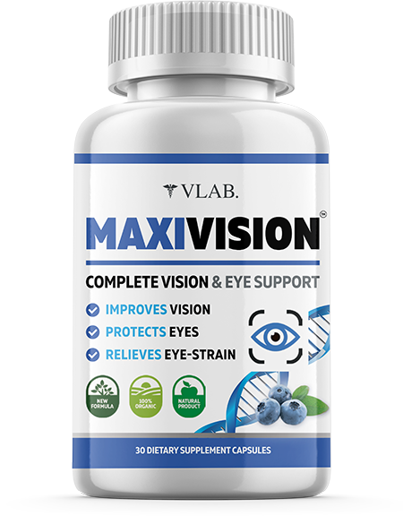

INTERVENȚIILE CHIRURGICALE LA OCHI POT FI EVITATE, DEOARECE ÎN MAJORITATEA CAZURILOR SUNTDOAR O RISIPĂ DE BANI
În majoritatea clinicilor private din București, recent au izbucnit scandaluri. Medicii au refuzat să prescrie un produs bine-cunoscut pentru îmbunătățirea vederii și insistă asupra intervenției chirurgicale. Verificările continuă. Până în prezent, datele sunt următoarele: 76% din operații ar fi putut fi evitate.
Această istorie a început la începutul lunii decembrie. Când unul dintre pacienți, Lucia Verdeș, a mers la poliție, acuzând o clinică cunoscută de fraudă. Situația s-a dovedit a fi extrem de simplă: femeii i s-a prescris o operație costisitoare, al cărei cost nu a fost acoperit de asigurare. La început, Lucia a fost supărată pentru că nu avea nicio posibilitate financiară de a efectua operația, iar vederea îi scădea literalmente în fiecare lună. Lucia a început să caute informații despre tratamente alternative și a găsit un remediu care promitea restaurarea completă a vederii (95-100%). După aceea, femeia a mers la clinică, poliție și presa locală. Datorită ei, a început o investigație majoră.
S-a dovedit că medicilor li s-a interzis utilizarea capsulelor în terapie. Dintr-un singur motiv - o reducere a numărului de intervenții chirurgicale, deoarece datorită tratamentului cu aceste capsule, vederea poate fi restabilită fără implicarea unui chirurg. Și ar reduce imediat veniturile clinicii cu peste 60%, deoarece clienții ar putea fi tratați acasă.
Ce este o operație? Aceasta este o interferență în structura ochiului, acestea sunt cicatrici care rămân pe viață. Da, nu sunt vizibile, dar acest loc este deja deteriorat. Din nou, puțini oameni știu că, în mai mult de 90% din cazuri, sunt necesare operații repetate în 3-5 ani, iar restabilește vederea fără intervenție chirurgicală și pe viață. De fapt, normalizează toate procesele care apar în organele vederii.
Cum funcționează ?
- ameliorează inflamația, tensiunea și ochii uscați
- întărește retina, promovează recuperarea acesteia
- normalizează presiunea
- ameliorează hipertonul
întărește mușchii globului ocular, pereții vasculari ai ochiului, restabilește claritatea vederii și normalizează toate procesele din interiorul ochilor.
Potrivit oamenilor de știință și medicilor, vindecă 86% din cazurile de insuficiență vizuală și ajută la restabilirea a 100% a vederii fără intervenție chirurgicală.
Tratamentul se poate face acasă; tot ce trebuie să faceți este să luați o capsulă de 2 ori pe zi după mese timp de 4-6 săptămâni. După câteva zile, veți observa cum se va îmbunătăți vederea.
Studii clinice
94% dintre respondenți au crescut nivelul de vedere până la optim
91% dintre cei chestionați au eliminat simptomele hipermetropiei
83% dintre cei chestionați au fost vindecați de cataractă în stadiul inițial și prematur
92% dintre cei chestionați au evitat intervenția chirurgicală din cauza glaucomului
98% dintre cei chestionați au reușit să normalizeze hidratarea naturală a ochilor
conține doar ingrediente naturale: luteină, afine, zeaxantină, extract de frunze de ginkgo biloba, acid folic. Un complex special de plante și fructe de pădure oferă beneficii maxime pentru sănătatea ochilor și redă acuitatea vizuală într-un singur curs.
Capsulele contribuie la
- Prevenirea bolilor oculare, incl. miocopie, glaucom și cataractă
- Restaurarea și menținerea vederii
- Protecția ochilor cu sarcină vizuală crescută (atunci când lucrați la computer și sub influența razelor solare)
- Normalizarea presiunii intraoculare
- Îmbunătățirea acuității vizuale
- Contrast vizual îmbunătățit
- Restaurarea celulelor deteriorate ale organelor vizuale
- Îmbunătățirea circulației sângelui în organele vizuale
- Ameliorează sindromul de ochi uscat (oboseală oculară, mâncărime roșeață, uscăciune).
Înainte de a decide cu disperare să faceți o intervenție chirurgicală, încercați capsulele naturale Maxvision. Aceste capsule vă pot ajuta să economisiți bani, timp și să vă normalizați complet vederea. Maxvision poate fi comandat la o reducere pe site-ul oficial.
COMENTARII
-
Onofrei MarinMulțumesc. Am comandat . Sper cu adevărat că va ajuta, vederea îmi scade din ce în ce mai mult de-a lungul anilor, dar mi-e teamă să fac o operație. Vecinul a făcut și suferă al doilea an, spune că totul este rău și trebuie să facă una din nou.
-
Burz CătălinMarin, coșmar! Operația este ultimul lucru! Mai bine să beți pastile.
-
Ciausu VioletaCătălin, de acord. De ce să mergeți sub cuțit în mod voluntar, dacă vă puteți restabili vederea fără ea. Nu recomand nimănui o intervenție chirurgicală.
-
Muntean TeodorConfirm pe deplin. este un remediu foarte bun. Cu ajutorul lui, mi-am restabilit vederea. Și apoi, în ultimii ani, am încetat să mai văd chiar indicatoare rutiere. Am început să iau la sfatul unui prieten și totul a fost în regulă. Acuitatea vizuală a revenit. Recomand la toți !
-
Trofim LiviaVă mulțumesc pentru articol. Este interesant. De ce să nu încerci, mai ales dacă prețul este atât de mic? De mult am vrut să-mi rezolv problema de vedere.
-
Dumitru EcaterinaAcesta este cel mai tare produs pentru ochi! Prietenul meu este, de asemenea, convins de acest lucru:
-
Stănescu GabrielChiar acum îmi restabilesc vederea cu acest remediu. Îl iau abia a doua săptămână, iar vederea mea a devenit mai clară. Dacă înainte nu puteam vedea numărul mașinii de pe fereastră, acum pot.
-
Diaconu MihaiAm și o experiență pozitivă cu capsulele . Mi-am redat vederea de la minus 5 la minus 1.5. A durat doar o lună.
-
Istrate IulianaMihai, acesta este un rezultat foarte bun! Vederea mea este la fel minus 5, nu văd nimic!
-
Diaconu MihaiIstrate Iuliana, încercați , în timp ce există o reducere, comandați ieftin. Cu siguranță va ajuta.
-
Ureche GabrielaAm auzit multe despre acest produs, vreau să îl cumpăr pentru mama mea. Sunt complet încrezătoare în naturalețea și eficacitatea produsului.
-
Busuioc AncuțaAnul trecut, un prieten a fost operat la ochi. De două ori (a făcut-o din nou). Și acum din nou vederea unui ochi s-a deteriorat foarte mult. A decis că își va restabili singur vederea cu ajutorul lui .
-
Scrob FlorinSunt plăcut surprins de efectul administrării acestor capsule. Am comandat după ce am citit acest articol, dar sincer să fiu, încă nu credeam foarte mult. Dar în 1,5 săptămâni, vederea s-a îmbunătățit de la -3,5 la -2,5. O restaurare completă a vederii pe termen scurt începe să apară. Sunt în continuare pe tratament, dar rezultatul este deja bun.
-
Fodor MarianEste greu de crezut că capsule obișnuite pot restabili vederea, dar, pentru a fi sincer, mi-e atât de frică de operație încât am decis să îl cumpăr. Și nu am regretat. În termen de o lună, rezultatul este foarte evident. Recomand tuturor .
-
Manolache RobertaAzi am primit comanda mea. Și apropo, servicii excelente - curierul a sosit la timp, politicos, purtând o mască și mănuși. Mâine voi începe să iau . Abia aștept rezultatul în câteva săptămâni. Judecând după recenzii, acesta este un produs foarte bun. Cel puțin compoziția capsulelor este excelentă - au tot ce aveți nevoie pentru sănătatea ochilor la un preț accesibil. Aceasta este o economie mare în comparație cu intervenția chirurgicală!
-
Bucur ElenaM-am gândit să fac o corecție a vederii, dar mi-a fost foarte frică. Acum 2 luni am aflat despre . În primul rând, am decis să urmez un curs de tratament - vederea mea s-a îmbunătățit, acum nu voi face operația.
-
Iovan NicușorM-ați convins să comand acest produs. Anterior, nu am cumpărat nimic de pe internet, dar nu există riscuri cu plata la primire. Dacă este cu adevărat la fel de eficient precum scriu aici, sunt gata să plătesc chiar și de două ori mai mult!
-
Cazacu GheorgheIovan Nicușor, am comandat și eu. Nu există deloc riscuri. Plata numai la primire.
-
Popescu IosifBună tuturor! Acum o lună am băut cursul și mi-am ridicat vederea la 1 !!! Nu am cuvinte.
-
Harton PetronelaAm comandat 5 pachete de . Vom trata întreaga familie, toată lumea are probleme de vedere. Ereditate proastă.
-
Ene ConstantinA luat pentru a reduce oboseala ochilor. Lucrez mult la computer. Este bine acum.
-
Dobre CristianMulțumesc! Pentru noi, persoanele în vârstă, operația este foarte costisitoare. Este bine că există , care poate fi achiziționat cu o reducere de 50%. Vă mulțumesc din suflet!
-
Matei AlexFolosesc pentru a treia săptămână acum. Vederea s-a îmbunătățit, ochii obosesc mai puțin.
-
Chitea ValentinaPrieteni, sper că produsul îi va ajuta pe toți, precum și pe mine. După 4 săptămâni, vederea s-a îmbunătățit de la -2 la 0,8. Mulțumim creatorului lui . Vă doresc tuturor ochi sănătoși.
Comentează șeful clinicii, medicul Molnar Paul:
Vreau să citez cifre care sunt întotdeauna mai convingătoare decât orice cuvânt: în 2019-2021, costul operațiilor în clinici a crescut cu aproape 150%, iar numărul intervențiilor s-a dublat! Oamenii au mai mulți bani? Eu nu cred în acel lucru! Doar că politica este diferită acum: medicii prescriu operații pentru toți pacienții. Oamenii sunt gata să facă orice pentru a-și recăpăta vederea și, prin urmare, frecvent cad de acord cu operații inutile.